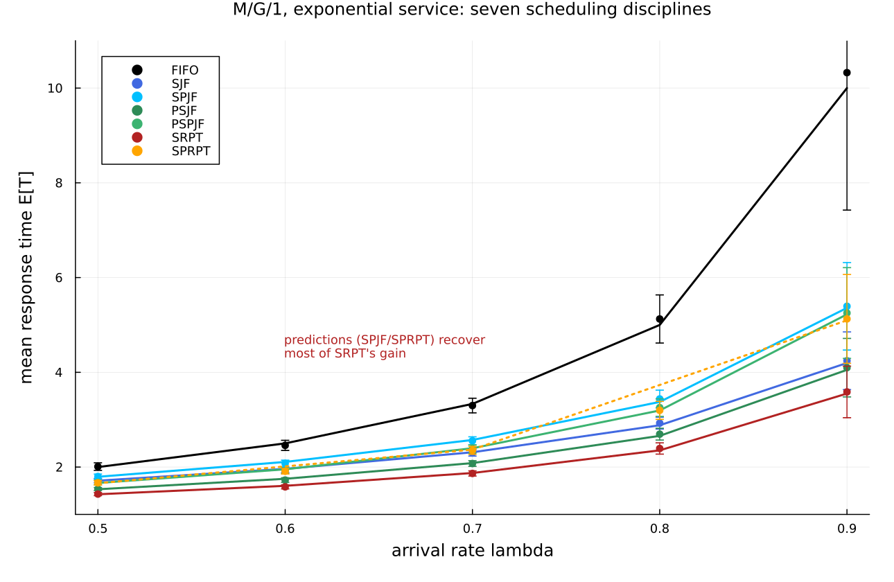
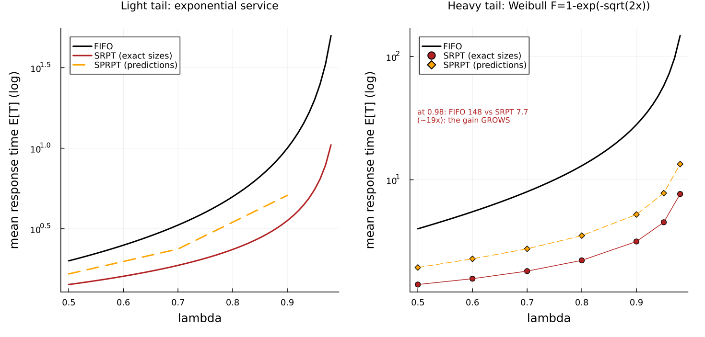
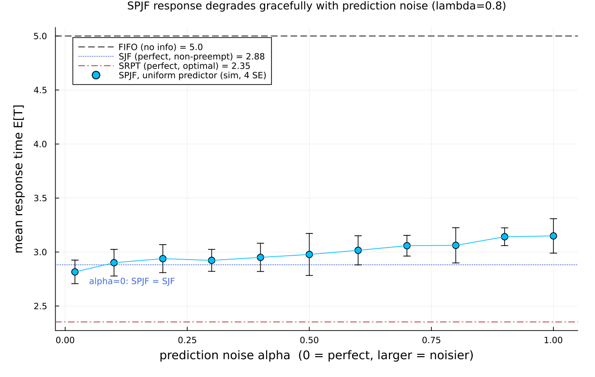

Scheduling with predictions: an M/G/1 discipline suite
This page walks through examples/mitzenmacher2025_predictions.jl. It builds one single-server queue and runs a whole family of scheduling rules through it, checking the simulated mean response time against exact published numbers from Mitzenmacher and Shahout, "Queueing, Predictions, and LLMs: Challenges and Open Problems" (SIGMETRICS 2025 tutorial survey, arXiv:2503.07545).
The survey's exact tables come from Mitzenmacher's two earlier peer-reviewed papers, which we cite for the numbers:
- [misprediction] M. Mitzenmacher, Scheduling with Predictions and the Price of Misprediction, ITCS 2020 — the source of Survey Table 1.
- [small-advice] M. Mitzenmacher, Queues with Small Advice, 2021 — the source of Survey Tables 2 and 3.
The question in one paragraph
A single server processes jobs one at a time. If it knows nothing about how long each job will take, the fair thing to do is serve them in arrival order: FIFO (first in, first out; also called FCFS, first come first served). If it knows each job's exact size, it can do far better by always working on the job with the least work left: SRPT (shortest remaining processing time), which is provably optimal for mean response time. The interesting case is in between: the server has only a prediction of each size, maybe from a machine learning model, and the prediction can be wrong. The papers show that even a weak prediction recovers most of SRPT's benefit. This example reproduces that result.
Throughout, response time (also called sojourn or time in system) means the whole time a job spends from arrival to completion: waiting plus service.
The discipline zoo
A rule for choosing which job to serve next is a discipline. One word first: a discipline is preemptive if a newly favored job may interrupt the job currently in service (the interrupted job later resumes where it stopped), and non-preemptive if the job in service always finishes first. Here are the seven disciplines, with the acronyms spelled out:
| Acronym | Name | Uses | Preemptive? |
|---|---|---|---|
| FIFO | first in, first out | nothing (arrival order) | no |
| SJF | shortest job first | true size | no |
| SPJF | shortest predicted job first | predicted size | no |
| PSJF | preemptive shortest job first | true size | yes |
| PSPJF | preemptive shortest predicted job first | predicted size | yes |
| SRPT | shortest remaining processing time | true remaining | yes |
| SPRPT | shortest predicted remaining processing time | predicted remaining | yes |
The pattern is simple: the "P…" prefix adds preemption, and the "…P…" inside the prediction names ("SP…") swaps the true size for the predicted size. FIFO uses no size information at all; SRPT uses perfect information; the four prediction-based rules (SPJF, PSPJF, SPRPT) sit in between.
Why this is one M/G/1 queue with two marks
Every job carries two per-job numbers drawn when it arrives:
- its true size
x(the exact service it will need), and - a predicted size
y, drawn jointly withx.
A per-job number sampled at the source and read downstream is exactly a Concourse mark. Arrivals are Poisson (the "M"), the service law is general (the "G" — here a deterministic time equal to the true size mark), and there is one server (the "1"). So the whole study is a single M/G/1 station whose only moving part is the discipline.
The prediction model. Following both source papers, a job of true size x gets a predicted size y that is exponentially distributed with mean x (the "exponential prediction model"). This is deliberately a weak predictor: it only tends to order jobs correctly. In Concourse that is one line — the predicted mark reads the size mark as its own mean:
mk = MarkLaw(
size = Law(:Exponential, scale = Const(1.0)), # true size x ~ Exp(mean 1)
pred = Law(:Exponential, scale = Mark(:size))) # predicted y ~ Exp(mean x)Each discipline is one argument. The service law is always Law(:Dirac, value = Mark(:size)) — deterministic given the mark. Only the discipline changes:
"SJF" => Priority(Mark(:size)), # order by true size
"SPJF" => Priority(Mark(:pred)), # order by predicted size
"PSJF" => Priority(Mark(:size); preempt = true),
"PSPJF" => Priority(Mark(:pred); preempt = true),
"SRPT" => SRPT(Mark(:size)), # rank = size - age
"SPRPT" => SRPT(Mark(:pred)), # rank = predicted - ageThe last line is the neat part. Concourse's SRPT ranks a job by (its by-mark) - (age in service) and preempts on that rank, while the job still completes at its true service time (the Dirac law reads Mark(:size)). Feeding SRPT the predicted mark therefore gives exactly the survey's SPRPT rank y - a (predicted remaining), with completion at the true x — no new machinery, just a different mark. When the predicted remaining goes negative (the prediction ran out but the job is not done), the job simply has the best possible rank and runs to completion, which is the survey's rule too.
The exact oracles
The papers give exact equilibrium formulas, and the script implements them by numerical integration so it carries its own ground truth, independent of the simulator. Six of the seven values are recomputed this way and match the published table to four decimals:
- FIFO is exact M/M/1:
E[T] = 1/(1-λ). - SJF and PSJF are the classic non-preemptive and preemptive priority-by-size integrals over the true-size distribution.
- SRPT is the Schrage–Miller integral.
- SPJF and PSPJF are the same priority integrals taken over the joint density
g(x, y) = e^{-x} (1/x) e^{-y/x}of size and prediction, exactly as derived in [misprediction].
The seventh, SPRPT, has no elementary closed form (its analysis is a busy-period argument), and its published equation value carries a known ~1% numerical-integration bias — the source paper truncates predicted times at 50. For a simulator the honest target is the paper's own published simulation value, so SPRPT is checked against that.
Validation 1: seven disciplines, exponential service
Exponential service (mean 1), the exponential prediction model, all seven disciplines at λ = 0.5, 0.7, 0.9. Every simulated mean agrees with the exact number within four standard errors:
discipline lambda simulated (4 SE) exact source |z|
FIFO 0.5 2.01 ± 0.02 2.0 oracle(=Table1) 0.51
FIFO 0.7 3.298 ± 0.039 3.333 oracle(=Table1) 0.91
FIFO 0.9 10.326 ± 0.725 10.0 oracle(=Table1) 0.45
SJF 0.5 1.715 ± 0.011 1.713 oracle(=Table1) 0.2
SJF 0.7 2.298 ± 0.017 2.312 oracle(=Table1) 0.87
SJF 0.9 4.244 ± 0.152 4.197 oracle(=Table1) 0.31
SPJF 0.5 1.8 ± 0.013 1.795 oracle(=Table1) 0.43
SPJF 0.7 2.554 ± 0.021 2.572 oracle(=Table1) 0.85
SPJF 0.9 5.394 ± 0.231 5.36 oracle(=Table1) 0.14
PSJF 0.5 1.537 ± 0.008 1.531 oracle(=Table1) 0.65
PSJF 0.7 2.074 ± 0.015 2.084 oracle(=Table1) 0.63
PSJF 0.9 4.098 ± 0.154 4.052 oracle(=Table1) 0.3
PSPJF 0.5 1.675 ± 0.011 1.664 oracle(=Table1) 0.94
PSPJF 0.7 2.382 ± 0.021 2.397 oracle(=Table1) 0.73
PSPJF 0.9 5.252 ± 0.239 5.224 oracle(=Table1) 0.12
SRPT 0.5 1.43 ± 0.008 1.425 oracle(=Table1) 0.54
SRPT 0.7 1.865 ± 0.014 1.875 oracle(=Table1) 0.68
SRPT 0.9 3.586 ± 0.136 3.552 oracle(=Table1) 0.25
SPRPT 0.5 1.667 ± 0.012 1.659 paper sim 0.72
SPRPT 0.7 2.353 ± 0.021 2.368 paper sim 0.74
SPRPT 0.9 5.127 ± 0.234 5.097 paper sim 0.13
max |z| = 0.94 (all pass at 4 SE)The table reads top to bottom as the whole point of the paper: FIFO is the worst (it ignores size), SRPT is the best (perfect information), and the prediction-based rules SPJF/PSPJF/SPRPT land in between — much closer to SRPT than to FIFO. A weak predictor buys most of the benefit of perfect knowledge.

The figure plots the exact curves (solid, from the oracles; SPRPT dotted from the published simulation points) with the simulated means and their 4-SE bars on top. At λ = 0.9 the spread is largest: FIFO climbs to 10 while SRPT stays near 3.5 and the prediction rules sit around 5.
Validation 2: the gain grows under a heavy tail
The second experiment swaps the light-tailed exponential service for a heavy-tailed Weibull law, F(x) = 1 − exp(−√(2x)). Its mean is still 1, but its second moment is 6 (versus 2 for the exponential), so a few very long jobs dominate. Because the Pollaczek–Khinchine formula makes FIFO's delay grow with the second moment, this is exactly where size information — and therefore predictions — helps most.
discipline lambda simulated (4 SE) exact/pub |z|
FIFO 0.5 3.984 ± 0.048 4.0 0.33
FIFO 0.7 8.192 ± 0.171 8.0 1.12
SRPT 0.5 1.414 ± 0.007 1.408 0.76
SRPT 0.7 1.824 ± 0.016 1.812 0.8
SPRPT 0.5 1.95 ± 0.017 1.94 0.61
SPRPT 0.7 2.788 ± 0.038 2.75 1.0
max |z| = 1.12FIFO is validated against the exact Pollaczek–Khinchine value E[T] = 1 + 3λ/(1−λ); SRPT against the script's own Weibull SRPT integral; SPRPT against the paper's published simulation value. (A footnote in honesty: the published Weibull FIFO entry at λ = 0.9 prints 29.00, but every other FIFO entry equals 1 + 3λ/(1−λ) exactly, which gives 28.00 at 0.9 — an apparent typo, so the script uses 28.00.) High load is expensive and high-variance under a heavy tail, so only λ = 0.5, 0.7 are validated tightly; the trend to λ = 0.98 is shown as a figure.

The two panels share a log scale. On the left (exponential) the FIFO/SRPT gap at λ = 0.9 is about 3×. On the right (Weibull) the gap is far larger and keeps opening: at λ = 0.98, FIFO is 148 while SRPT is 7.7 — roughly 19× — and SPRPT (predictions only) is 13.4, still an order of magnitude under FIFO. The intuition the paper gives: long jobs blocking short ones is what inflates delay, and even a rough prediction keeps long jobs from jumping ahead of short ones. Predicting the long jobs correctly matters more than the short ones.
Validation 3: one-bit predictions
The third experiment is the coarsest possible predictor: a single bit per job, saying only whether the job is "short" or "long" relative to a threshold T. Short jobs go to the front of the line, long jobs to the back. There are two versions of the bit:
- THRESHOLD — a perfect bit, set from the true size (
x ≤ T?). This is the best a one-bit advisor could do. - PREDICTION — a noisy bit, set from the exponential prediction (
y ≤ T?).
Both are two-class priority queues in Concourse. A "short vs long" bit is a step-function ordering key, which the surface algebra builds from ceil/min/max (no comparison operator needed), so no new discipline is required:
# 0 for jobs with key ≤ T ("short"), 1 for jobs above T ("long"); FCFS within a class
oneb_key(e, T) = ceil(min(max(e - Const(T), Const(0.0)), Const(1.0)))
Priority(oneb_key(Mark(:size), T)) # THRESHOLD (perfect bit), non-preemptive
Priority(oneb_key(Mark(:pred), T)) # PREDICTION (noisy bit), non-preemptiveWe validate the non-preemptive mean response t₁ of both schemes against the exact closed forms of [small-advice] at λ = 0.5, 0.7, 0.9:
scheme lambda T* sim t1 (4 SE) exact t1 |z|
THRESHOLD 0.5 1.28 1.802 ± 0.01 1.782 1.99
PREDICTION 0.5 0.9 1.849 ± 0.008 1.849 0.11
THRESHOLD 0.7 1.51 2.564 ± 0.023 2.542 0.99
PREDICTION 0.7 1.2 2.798 ± 0.044 2.762 0.83
THRESHOLD 0.9 2.1 5.188 ± 0.142 5.284 0.67
PREDICTION 0.9 2.08 6.376 ± 0.217 6.368 0.04
max |z| (non-preemptive t1) = 1.99The optimal threshold T* is found in the script — analytically for THRESHOLD (the root of λ = (T−1)/(e^{−T}+T−1)) and by a small numerical minimization for PREDICTION (whose closed form involves Bessel-function integrals, computed here by the same quadrature). Even the noisy one-bit PREDICTION lands far below FIFO: at λ = 0.9, 6.4 versus FIFO's 10.
The exact identity, and an honest exclusion
[small-advice] proves a clean identity between the non-preemptive mean response t₁ and the preemptive mean response t₂ at the optimal threshold: t₁ = λ·t₂ + 1 (preemption always helps). The script confirms this identity holds for the exact closed forms to machine precision (residuals ~10⁻¹⁵).
The preemptive scheme itself, however, is not something Concourse's discipline surface expresses, and this is worth stating precisely. In the paper's preemptive threshold, any arriving short job preempts the job in service — including another short job — so the short class is served last-come-first-served preemptive-resume, and a short of size t has sojourn t/(1−ρ(T)). Concourse's Priority(...; preempt = true) evicts the job in service only when a waiting job is strictly better, so two jobs of the same class (equal key) never preempt each other — the short class is FCFS. That is a different, also-valid discipline ("class-preemptive, FCFS within class"), and its mean response is genuinely different from the paper's t₂ (a per-class check in the script confirms the short-class sojourn matches the FCFS value, not the LCFS-preemptive-resume value). So the simulated t₂ and the t₁ = λ·t₂ + 1 identity are out of scope for the simulator; the identity is verified only for the closed forms. Note the continuous-size preemptive disciplines PSJF, PSPJF, and SRPT are unaffected — with distinct sizes there are no ties, so "strictly better" fires for every smaller job, exactly as those disciplines require.
What about prediction quality?
The last figure sweeps prediction noise directly. It uses a different, tunable predictor from [misprediction]: a job of size x gets a predicted size uniform on [(1−α)x, (1+α)x]. At α = 0 the prediction is perfect (so SPJF becomes SJF); larger α is noisier.

At λ = 0.8, SPJF's mean response rises smoothly from the SJF value as α grows, staying well below the FIFO baseline across the whole range. This is the "graceful degradation" the survey emphasizes: performance tracks prediction quality continuously, so a mediocre predictor is still worth a lot.
Honest scope
- Reproduced exactly (validated at 4 SE against exact numbers, max |z| under 2): FIFO, SJF, SPJF, PSJF, PSPJF, SRPT for exponential service (Survey Table 1); FIFO and SRPT for Weibull service (Survey Table 3); the non-preemptive THRESHOLD and PREDICTION one-bit schemes
t₁(Survey Table 2). - Validated against the paper's published simulation value rather than a re-derived oracle: SPRPT (no elementary closed form; its published equation value has a ~1% integration bias).
- Excluded, with reason: the preemptive one-bit threshold
t₂and thet₁ = λ·t₂ + 1identity. The paper's preemptive threshold needs shorts to preempt shorts (LCFS-preemptive-resume within a class), which Concourse's strictly-better-key preemption does not express; the identity is verified only for the closed forms. (SPRPT — shortest predicted remaining processing time — is, by contrast, fully expressible:SRPT(Mark(:pred)).) - Calibrated vs exact: nothing is calibrated here. Every target is an exact equilibrium value or an exact algebraic identity from the source papers. The only approximations are the numerical quadratures used to evaluate the integral formulas, which match the published tables to their printed digits.
- Out of scope: the survey's LLM-systems sections (KV-cache memory limits, prefill/decode phases, batching), its competitive-analysis bounds (§2.3), the prediction-cost models SkipPredict/DelayPredict (§2.4), and the multi-server power-of-two-choices fluid limits (§2.5). This example is only the single-queue M/G/1 prediction theory of §2.1–2.2.
What this demonstrates about Concourse
- A predicted size is just a second mark drawn jointly with the true size; the entire prediction study rides on
pred = Law(:Exponential, scale = Mark(:size)). - Seven textbook disciplines are seven one-argument choices. Notably, SPRPT needs no new discipline:
SRPT(Mark(:pred))ranks by predicted-remaining while the job still completes at its true size. - A one-bit "short/long" advisor is a step-function priority key assembled from
ceil/min/maxin the surface algebra — a two-class priority queue with no new code. - The response times are read by folding over the replayed record (departure minus arrival), and every discipline is checked against an exact equilibrium number — six recomputed in-script by quadrature, the rest cited — so the simulator is held to the published theory across the whole zoo.
Running it
julia --project=examples examples/mitzenmacher2025_predictions.jlRuntime is a few minutes; the figures land in docs/figures/ and docs/src/manual/figures/. The docs build does not run the simulation — the committed PNGs are the artifacts this page embeds.